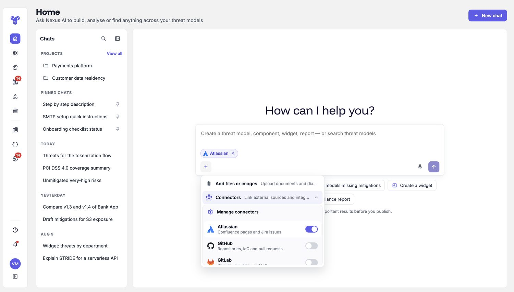
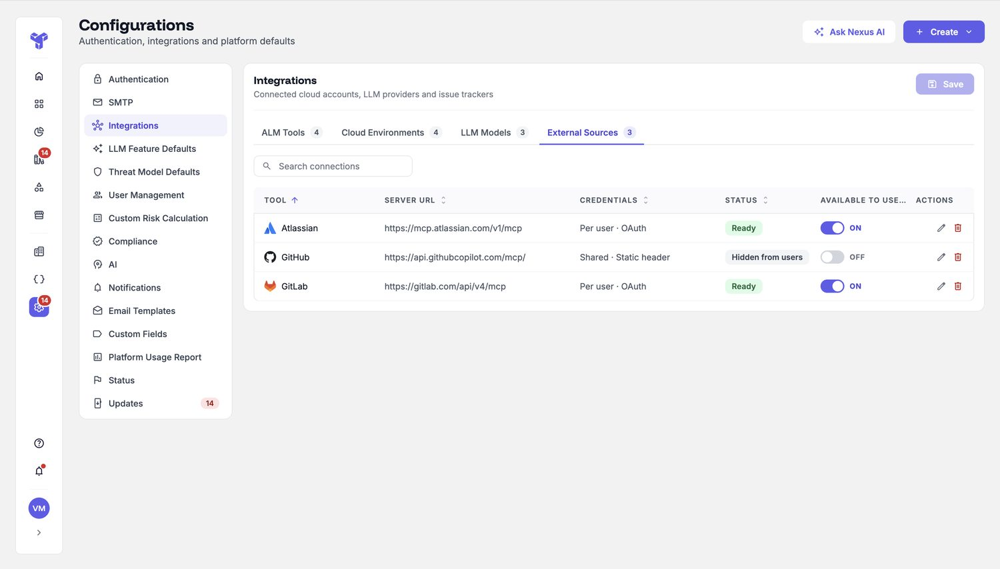
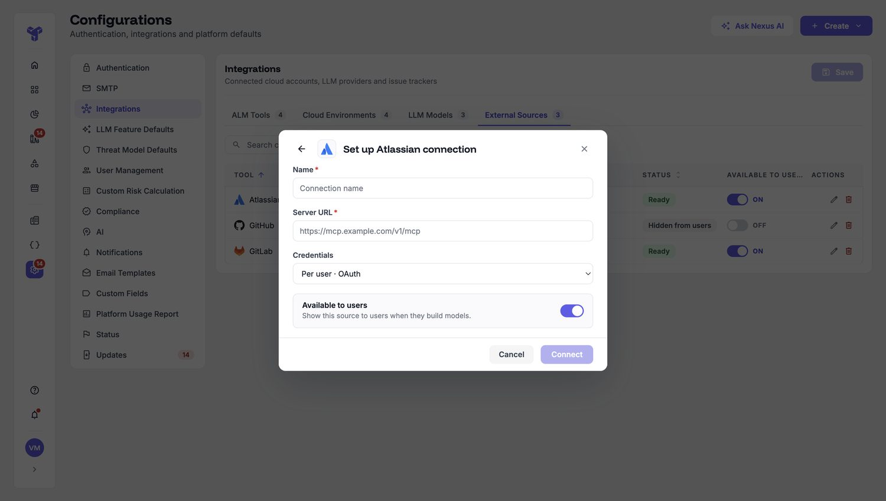

I reworked ThreatModeler's Home from a static list of threat models into an intent-driven surface. Security architects, developers, DevOps engineers and administrators each open it to do different things — so instead of one list for everyone, I designed a single surface that responds to what a person is trying to do: create a model, find work, generate content, or connect a source. The AI proposes; the person stays in control of every consequential step.
Role
Senior UX Designer · Design owner on NEXUS
Focus
AI-native UX · Interaction & design system
Platform
ThreatModeler NEXUS · Enterprise SaaS
What I owned
End-to-end UX · AI interaction model · Design-system delivery
The new Home — an intent input in place of the list. Shipped.
At a glance
The product
ThreatModeler NEXUS is an enterprise threat-modeling platform — where security architects, developers, DevOps and admins map how a system can be attacked and define the requirements to defend it. The Home is the entry point every role starts from.
The problem
The old Home was a static list of ~900 threat models — a place you scrolled, sorted and filtered. The product's real power (create, find, generate, connect) sat behind menus, and four very different roles all landed on the same generic list. Reaching value was slow.
Discovery
I researched before I designed.
Before touching the interface, I ran discovery with the people closest to the problem — customer success, the onboarding team, product, engineering, and several customers — asking where the product lost people and what they actually wanted from AI. Four findings shaped everything after.
Finding 01
AI existed, but scattered. Each screen ran its own agent — a report agent on reports, a separate assistant for help and resources, generation reachable only from the Secure Design Graph, another AI on the diagram, and its own search on the model list. It was inconsistent, and most people never found half of it.
Finding 02
The Home was passive. A project list with no next steps — pending approvals and assigned models were buried in rows, so people logged in unsure where to go.
Finding 03
People wanted answers, not noise. Developers, in particular, wanted actionable results and a guided, conversational way to build — not manual diagramming and long, unprioritised lists of threats.
Finding 04
One generic UI served three very different roles. Developer, security architect and CISO all landed on the same screen, though each needs a different starting point.
The shift
The home was a filing cabinet. I made it a starting line.
Two things were true: the Home was a passive list, and the AI behind the product was scattered across screens. The redesign addresses both — it consolidates those separate agents into one surface, and turns the entry point into a place where you state intent and get an outcome, whatever your role.
Before
The old Home — ~900 models in a table you scrolled and filtered. Capable, but passive.After
The new Home — a single input that routes to create, find, generate or connect.
Trade-off Putting every capability behind one surface risks turning the Home into a control panel. I leaned on intent and progressive disclosure so it stays a simple starting point — the surface responds to what you ask, rather than showing everything at once.
The road not taken
I tested a second direction — a home that decides for you.
Before the chat surface, I designed and tested a proactive briefing home: a ranked "Today's Brief," prioritised actions, model health and an approval queue. It's opinionated — it tells you what to do first.
The alternative — a dashboard that ranks your day for you. Tested with the same customers and stakeholders; not shipped.
Both went in front of the same people. The chat home won, for reasons that matter in a security product:
It keeps the user in control of intent — the dashboard assumes the system already knows your priority; chat lets the person say what they need. Truer to the human-in-the-loop principle the product runs on.
It adapts to the role — one ranked layout can't serve a developer and a CISO equally; a chat surface responds differently to each.
It consolidates the scattered agents more naturally than a wall of widgets — one input, every capability.
The honest read The dashboard was strong, well-received work. But betting the entry point on the AI's ranking felt wrong for a security tool, where trust and control matter most — putting intent in the user's hands was the more defensible call.
The Home shouldn't be a list you look at. It should respond to what you're trying to do.
One surface, many jobs
One surface, driven by intent instead of navigation.
Four roles open the same Home to do different jobs. Rather than build a separate screen for each, I made one surface respond to intent — everything below starts from a single input.
Create & manage
Build and run threat models
Start a model from a plain-language description through a guided AI build, and manage the whole portfolio from one place.
Find by intent
Ask, don't hunt
"Models missing mitigations," "my pending approvals," "models with login components" — natural language across the entire workspace.
Generate
Threats, requirements, reports
Generate components, threats, security requirements and compliance reports — each as a reviewable proposal, not a silent action.
Build
Custom dashboard widgets
Spin up widgets — "threats by department," "unmitigated very-high risks" — so the workspace answers each role's question.
Connect
External sources for continuous modeling
Link Atlassian, GitHub and GitLab so a model stays tied to the system it describes as that system changes.
Stay in control
Human-in-the-loop by design
AI proposes; the expert accepts, adjusts or rejects. Nothing consequential is committed without a person.

Connect external sources (Atlassian, GitHub, GitLab) from the Home, so a model can stay linked to the system it describes.
Connect once — and govern what users see
The user just picks a source; behind it, an admin connects it once and controls availability — per-user OAuth, ready / hidden status, and an "available to users" toggle — so security teams govern what's exposed. Designing the admin side is part of designing the capability, not an afterthought.

Admin side — connected sources with per-source credentials, status and an available-to-users control.

Connecting a source — name, server, credential mode, and whether users can see it.
01 · Deep dive — building a model the AI-native way
Guided, not magic. The human stays the author.
The clearest test of "AI-native" is what happens after you ask for something. Building a model runs as a guided flow where every AI step is a decision the user owns.
Ask a few sharp questions instead of facing a blank canvas
A blank modeling canvas paralyses a newcomer; full auto-generation produces a plausible-but-wrong model. So the build opens with a short, skippable interview — where it runs, who's outside the trust boundary, what data moves through, how data gets in — capturing just enough to make the analysis accurate.
Trade-off A few questions up front — placed where they set the accuracy of everything downstream, and skippable for experts.
Guided setup — plain-language questions with quick-pick answers, capped and skippable.
Turn AI suggestions into a reviewable proposal, not a done deal
The AI matches what you described against the component library and shows its confidence — exact, close, and no match — so you accept a suggestion or create a new component deliberately. The match quality is visible, so trust is earned rather than assumed.
Trade-off A confirmation step — placed exactly where suggested content becomes part of a real security model.
Component matching with visible confidence — exact / close / no-match, each with "use suggested" or "create new."
Keep the expert in charge of consequential security content
Generated threats and security requirements arrive per component as proposals — STRIDE-tagged, severity-rated — that the user accepts or rejects one by one, or in bulk. In a security product, a confidently-wrong auto-commit is worse than no automation, so the decision always stays human.
Generated threats and requirements as accept/reject proposals — STRIDE-tagged and severity-rated.
Land on a real, editable model — not a dead end
The flow that began with one sentence ends on the canvas with a drafted model, an always-on Nexus AI panel for further changes, and a short get-started checklist. The home didn't just answer a question; it produced working artifacts the team can build on.
From one description to a working model — entities, data flows and threats drafted on the canvas, ready to refine.
AI proposes; the expert decides. Every generation is a reviewable step — never a silent commit.
How I worked
Found the real friction. Shipped it cleanly.
This wasn't designed in a vacuum — it came from the people who watch users struggle, and it shipped through a system so engineering could build it fast.
Ideated with AI tools to explore directions quickly and pressure-test the intent-driven model before committing.
Ran discovery across the org — customer success, TPMs, engineering, the customer-onboarding team, and customers — to find exactly where the old home lost people.
Designed for four roles at once — security architect, developer, DevOps, admin — one surface serving different jobs.
Validated before building — 5–6 usability sessions with the same customers and internal stakeholders, who gave it a green light — then partnered with a developer for about a month to implement it and fix adjacent UX issues.
Shipped efficiently through the design system — tokens and components — so the new home was consistent and quick to hand to development.
Before → after
What changed, in the product.
Before
After
Entry point
A static list of threat models
An intent box: "How can I help you?"
Finding work
Hunt through menus and filters
Ask in plain language across the workspace
Creating a model
Blank canvas, manual build
Guided AI build → real editable model
AI's role
Scattered, feature-by-feature
Native across create, find, generate, connect
Fit across roles
One list for everyone
One surface, driven by each role's intent
Measured after launch
Metric
Before
After
Change
Time to first threat model (median)
23.7 hrs
2.2 hrs
−91%
Holds across all percentiles, not just the median. The "before" cohort included long-tenured users who hadn't built yet — so I read this as movement after launch, not proven causation.
Reached a first model in ≤ 1 hour
31%
43%
+12 pp
Search results returned · AI chat (median)
1
18
+1,700%
Chat use also grew ~75% as people migrated off the old searchbar. This counts results returned, not confirmed "found what they needed" — there's no result-opened event yet.
AI security-requirement suggestions accepted
88% · 860
66% · 1,972
rate −22 pp · volume +129%
AI threat suggestions accepted
91% · 270
64% · 601
rate −27 pp · volume +123%
Acceptance rate dipped as the audience widened from a handful of power users to a larger, more diverse pool — while accepted volume roughly doubled. I show both on purpose.
Measured in PostHog · 30 days before vs. after the new Home shipped · internal orgs excluded · directional movement, not a controlled test.
Reflection
Where I'd take it next.
What shipped
An AI-native Home and a guided, human-in-the-loop model build — live, and serving four roles from one surface, connected to real external sources for continuous modeling.
What I'd measure next
Close the instrumentation gaps this surfaced: a "result opened" event so find-success is real usage, not just results returned; a "connector connected" event so adoption is measurable beyond page visits; and AI-acceptance tracked by cohort, since rate and audience move together as the user base grows.